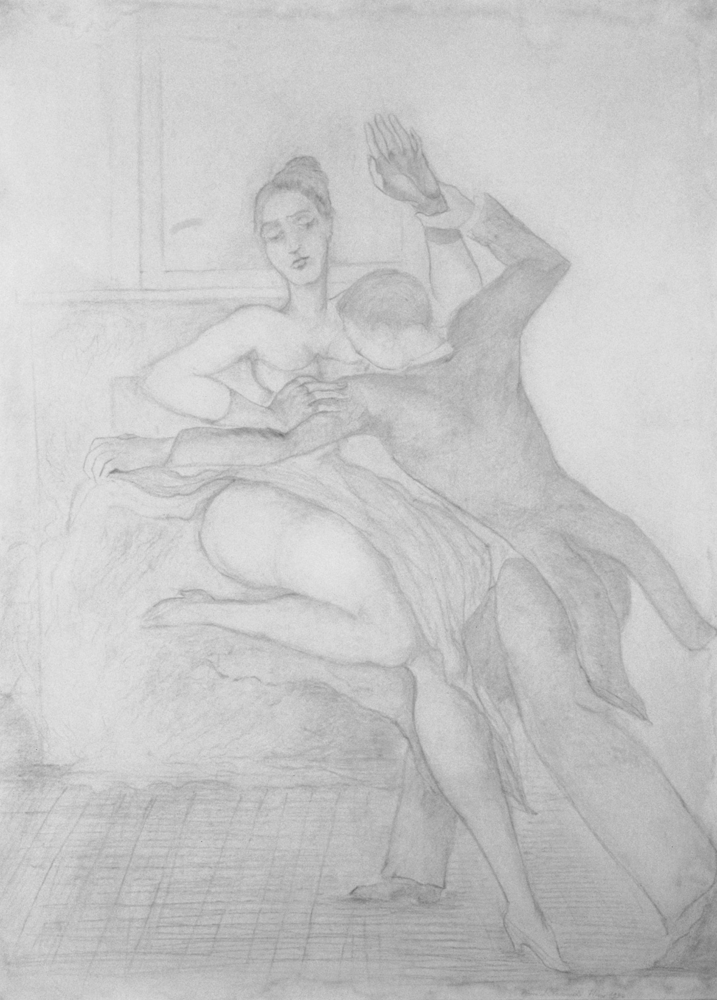

Lágrimas de Eros · Obra 115 de 124
Diana y Acteón
Pierre Klossowski (1954)

Diana, con una pierna en alto, forcejea con Acteón, que ya tiene cabeza de ciervo. Klossowski escribió sobre el mismo mito «Le Bain de Diane» (Pauvert, 1956). El catálogo razonado en línea recoge un gran dibujo del tema de 1954, expuesto en París en 1955 y entre 1981 y 2007 en Berna, Viena, Ginebra, Ixelles, Piran, Londres, Colonia y París.
Lo que hace que destaque
Diana, con una pierna en alto, forcejea con Acteón, que ya tiene cabeza de ciervo. Klossowski escribió sobre el mismo mito «Le Bain de Diane» (Pauvert, 1956). El catálogo razonado en línea recoge un gran dibujo del tema de 1954, expuesto en París en 1955 y entre 1981 y 2007 en Berna, Viena, Ginebra, Ixelles, Piran, Londres, Colonia y París.
Contexto histórico
Identificación probable, comparando con la miniatura del catálogo razonado. Hay otras versiones de 1955 (176 × 78 cm y una pequeña de 27 × 21 cm) y de 1957. El enlace lleva al catálogo general; hay que filtrar por el tema «Diane et Actéon».
Autoría y procedencia
Pierre Klossowski (1905-2001), escritor, traductor y dibujante francés, hermano mayor de Balthus, autor de reflexiones decisivas sobre Sade, Nietzsche y el erotismo.
En los libros
Las lágrimas de Eros, de Georges Bataille · Lámina de la p. 193
«Pierre Klossowski, nacido en París en 1905, es el hermano mayor de Balthus. Se le conoce sobre todo como escritor.»Pierre Klossowski, born in Paris in 1905, is the older brother of Balthus (cf. p. 181). He is known above all as a writerGeorges Bataille, «Las lágrimas de Eros» (1961), traducido al español de la ed. inglesa de City Lights (1989), p. 193
Ficha pendiente de contrastar con fuentes académicas.